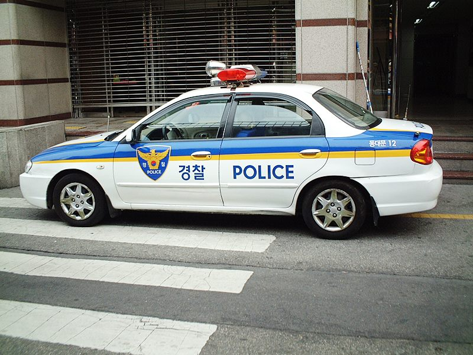

타이거 우즈, 약물 운전으로 5년간 운전 금지… 골프 카트는 예외
골프 선수 타이거 우즈가 약물 영향 아래 운전한 혐의와 관련해 5년간 운전이 금지된 것으로 전해졌다. 경기 중 사용하는 골프 카트는 도로 차량이 아니어서 적용 대상이 아니다.
장입군 기자 · 2026.09.05
橋경제·문화·스포츠

골프 선수 타이거 우즈가 약물 영향 상태에서의 운전과 관련해 5년간 운전면허가 정지되는 처분을 받은 것으로 전해졌다.
광고 문의 · 300×250약물 영향 아래 운전하는 행위는 음주 운전과 마찬가지로 대부분의 나라에서 형사 처벌 대상이다. 처방약이라 하더라도 운전 능력에 영향을 주는 성분이라면 규제 대상이 된다.
이번 처분에서 눈길을 끄는 부분은 적용 범위다. 경기장에서 사용하는 골프 카트는 일반 도로를 달리는 차량으로 분류되지 않아 운전 금지 처분의 대상에 포함되지 않는다.
다만 카트도 사고 위험이 없는 것은 아니다. 골프장 내 카트 사고는 경사와 젖은 노면에서 반복적으로 발생해 왔고, 안전벨트 미착용 상태의 추락 사고가 다수 보고된다.
우즈는 여러 차례 수술과 재활을 거치며 통증 관리 약물을 복용해 왔다고 알려져 있다. 이 사안은 진통제 의존 문제를 다루는 논의와도 맞닿아 있다.
처방약과 운전의 관계는 일반 운전자에게도 해당된다. 감기약, 수면 보조제, 항히스타민제 가운데 졸음을 유발하는 성분이 포함된 경우가 있어 복약 안내를 확인할 필요가 있다.
본지는 개인의 사생활 영역보다, 이 사안이 제기하는 제도적 기준과 안전 정보에 초점을 둔다.
출처·참고 (사실 확인용 — 본문은 직접 재작성)
· https://www.khan.co.kr/
· https://www.khan.co.kr/